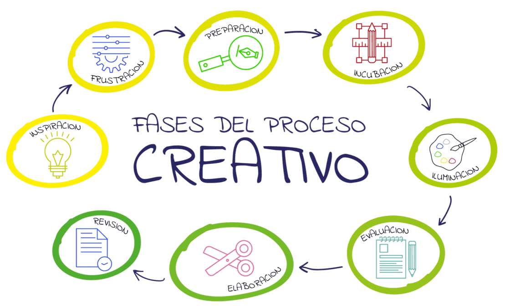

El proceso creativo del dibujo es un viaje que va desde la observación y la idea inicial (apunte/boceto), pasando por la exploración (encajado, línea, valoración, experimentación con materiales), hasta la composición y acabado (color, correcciones), permitiendo la expresión personal, la comunicación de emociones y la resolución de problemas, donde el dibujo actúa como una extensión de la mente para generar y refinar conceptos visuales. 
DIBUJAR COMO MEDIO DE COMUNICACIÓN PROYECTO FINAL
Proceso Creativo
Boceto
- Duración:
- 30:00
- Agrupamiento:
- Individual
Elabora 3 bocetos diferentes a partir del tema " la naturaleza".
Comprender la importancia del boceto en el proceso creativo.
Explorar distintas soluciones visuales a un mismo tema.
Aplicar elementos del lenguaje plástico (línea, forma, composición).
Desarrollar la creatividad y la capacidad de experimentación.
Rúbrica
| Excelente (4) | Notable (3) | Suficiente (2) | Insuficiente (1) | |
|---|---|---|---|---|
| Cantidad de bocetos | Presenta 3 o más bocetos bien diferenciados (2.5) | Presenta 3 bocetos (1.75) | Presenta 2 bocetos (1.50) | Presenta 1 o ningún boceto (1.25) |
| Creatividad y originalidad | Ideas muy originales y personales (2.5) | Ideas variadas y creativas (1.75) | Ideas poco variadas (1.50) | Ideas copiadas o muy simples (1.25) |
| Uso de la línea y composición | Uso expresivo y seguro de la línea y la composición (2.5) | Uso correcto de la línea y composición (1.75) | Uso básico y poco trabajado (1.50) | Uso incorrecto o descuidado (1.25) |
| Presentación y limpieza | Bocetos claros, ordenados y bien presentados (2.5) | Presentación correcta (1.75) | Presentación descuidada (1.50) | Difícil de entender (1.25) |
- Actividad
- Nombre
- Fecha
- Puntuación
- Notas
- Reiniciar
- Imprimir
- Aplicar
- Ventana nueva
Obra publicada con Licencia Creative Commons Reconocimiento Compartir igual 4.0